August 28, 2015
Chimera2 is the next generation visualization program from the Computer Graphics Lab at UC San Francisco, following Midas, MidasPlus, and Chimera 1.
Chimera2 has better graphics (e.g. interactive ambient shadows), handles large structures (millions of atoms) much faster, and has a modern single window user interface, and will have a web site of available extensions written by others using documented programming interfaces.
Chimera2 is not backward compatible with Chimera 1, although many aspects will be familiar from Chimera 1.
We plan an initial release with basic capabilities at the end of 2015, on Mac (10.10 or newer) and Linux computers. A Windows release will be later in 2016.
Chimera2 is currently mostly controlled by typed commands. We do not yet have much documentation for the commands although many are the same or similar to Chimera 1. There is Python programming command documentation.
| open 2bbv | color #1 bychain | style stick /b | Mouse drag to move. |
| 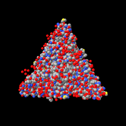 | 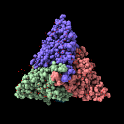 | 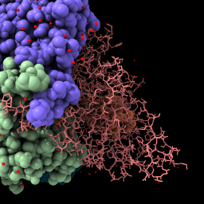 |
|
| File is fetched from PDB in mmCIF format and cached in ~/Downloads/Chimera/PDB | Each chain gets its own color. | Change chain b to stick style. | Rotate by dragging mouse, translate by dragging mouse with option key pressed. |
| ~display /c | ribbon /c | Mouse click to select an atom. | Press up-arrow key. |
| 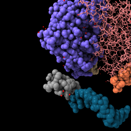 | 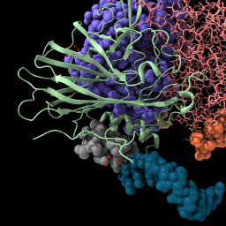 | 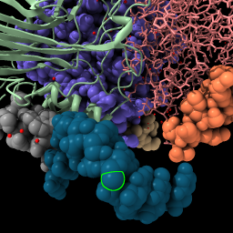 | 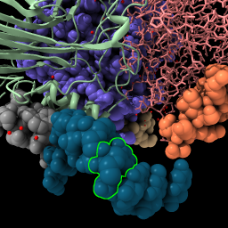 |
| Hide chain c atoms. | Display backbone ribbon | Click to select showing green outline, shift-click to add to selection, click background to clear selection. | Up arrow and down arrow keys expand and unexpand selection. |
| color sel gold | surface #1 | ~display display :HOH style sphere |
| 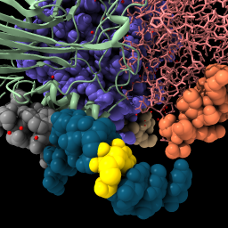 | 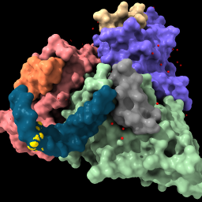 | 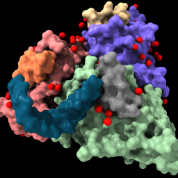 |
| Use "sel" to refer to selected atoms in any command. | Solvent excluded surface for each chain. | Show waters as red spheres. |
| sym #1 | sym #1 assembly 1 | view |
Assemblies for 2bbv 1 = complete icosahedral assembly (60 copies) 2 = icosahedral asymmetric unit (1 copies) 3 = icosahedral pentamer (5 copies) 4 = icosahedral 23 hexamer (6 copies) PAU = icosahedral asymmetric unit, std point frame (1 copies) XAU = crystal asymmetric unit, crystal frame (5 copies) | 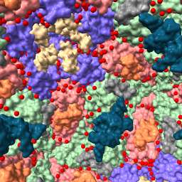 | 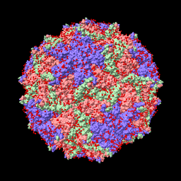 |
| List mmCIF assemblies. | Show the assembly named "1". | Bring all models into view. |
| light full | sym #1 assem 3 set bg white set silhouette true | sym #1 clear ~display ribbon save ~/Desktop/2bbv.png | display ~ribbon light flat |
| 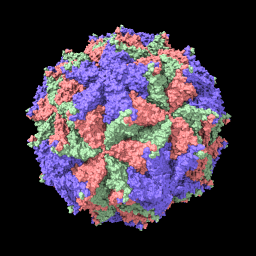 | 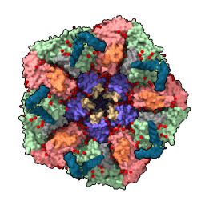 | 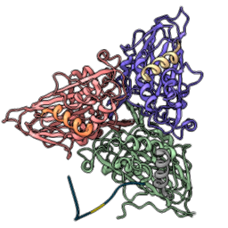 | 
|
| Show direct and ambient shadows. | Show pentamer assembly, set background color to white, show thin black edges. | Show asymmetric unit as ribbon and save image. | Flat lighting with silhouette edges. |
| buriedarea /a with /b sasa #1 & ~:HOH | contacts #1 | movie record super 3 ; turn y 3 120 ; wait ; movie encode ~/Desktop/spin.mp4 quality high |
Buried area between /a and /b = 1900.4 area /a = 15385, area /b = 14989, area both = 26573 Solvent accessible area for #1 & ~:HOH = 34093 | 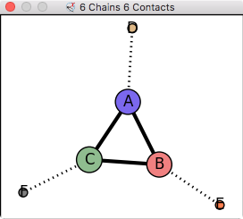
8 buried areas: B A 1900, C A 1865, C B 1836, C F 766, A D 738, B E 709, C N 211, N F 93 | |
| Compute solvent accessible buried surface area between chains A and B. Also compute total solvent accessible area excluding waters. | Display contact graph between all chains. | Record movie spinning 3 degrees for 120 steps. Commands are on one line. |
| open emdb:1080 | volume #1 level 0.9 |
| vol #1 enclose 1e6 step 1 color tan |
| 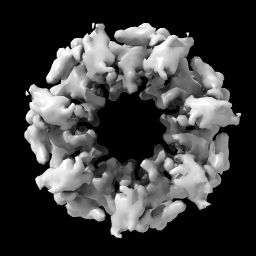 | 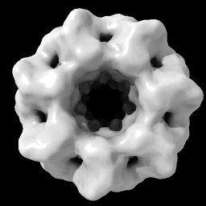 | 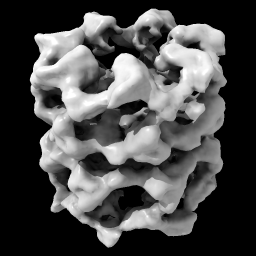 | 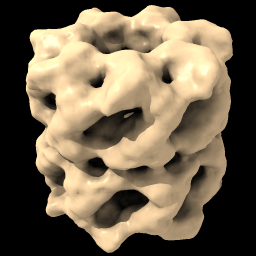 |
| Open EM Databank map 1080. | Hover mouse over map reports contour level 1.675 in status line. Then change level. | With Mac one-button mouse drag while pressing Command key. | Set level to enclose 1,000,000 cubic Angstroms, show full resolution and set color. |
| light full set bg gray set silhouette true | open 1grl |
| fit #2 in #1 volume #1 transparency 0.5 color bychain |
| 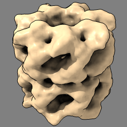 | 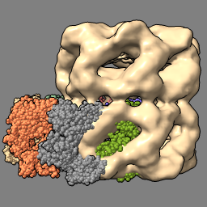 | 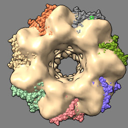 | 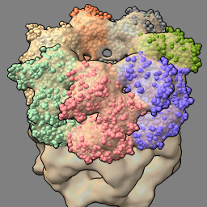 |
| Lighting with shadows, plus thin black edges. | Open atomic model to fit in map. |
| Locally optimize fit of atomic model in map. Make map 50% transparent. |
| molmap #2 10 vol #3 style mesh | vop subtract #1,3 minRMS true vol #4 color pink transparency 0 ~display ; ribbon | close open emdb:1273 | volume #1 region all showOutline true |
| 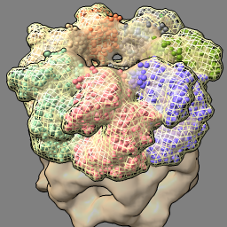 | 
| 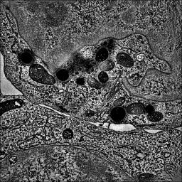 | 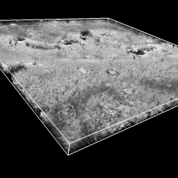 |
| Create simulated map for atomic model at 10 Angstroms resolution and show as mesh. | Subtract simulated map from experimental map. | Open tomogram of a T-cell, single-plane grayscale displayed because of large map size. | Show all planes of tomogram, grayscale rendering. |
| open eds:1a0m | open 1a0m style stick vol #1 level 1.0 style mesh | vop zone #1 atoms #2 radius 2 vol #3 level .5 style mesh transp 0.6 |
| 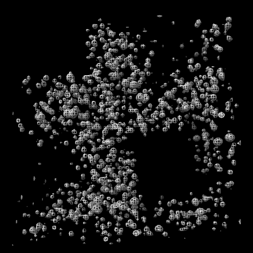 | 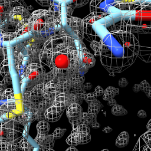 | 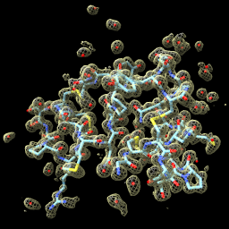 |
| Open x-ray map for PDB 1a0m from Uppsala Electron Density Server. | Show atomic model and x-ray map as mesh. | Show map zone within 2 Angstroms of atoms. |